if (!requireNamespace("tidyverse", quietly = TRUE))
install.packages('tidyverse')
if (!requireNamespace("Seurat", quietly = TRUE))
install.packages('Seurat')
if (!requireNamespace("colorBlindness", quietly = TRUE))
install.packages('colorBlindness')
if (!requireNamespace("RColorBrewer", quietly = TRUE))
install.packages('RColorBrewer')5 - Quality Control
Quality Control
Introduction
This notebook reviews the quality control steps recommended at the beginning and at each subsequent annotation phase. In order to denoise a sparse cell by gene matrix, we take out unhelpful and distracting cell data to create a better representation of an experiment. In this notebook, we will look at UMI and gene counts, filter out cells with high mitochondrial levels, investigate potential doublets (using DoubletFinder), and compare the cell by gene distribution before and after filtering.
Key Takeaways
QC is the process of filtering out “bad” data which makes it a subjective process where being conservative about what to keep and well-informed about your data is the best practice.
QC metrics include UMI and gene counts, mitochondrial gene expression, and doublet detection.
When in doubt, keep it. Once you remove something, you’ll never get it back.
Why are mitochondrial genes highly expressed and found in many datasets?
There are often disproportionately high mitochondrial cells in many datasets because cells upregulate mitochondrial genes during stress (such as during library prep) and near death.
From Orchestrating single-cell analysis with Bioconductor:
“High proportions are indicative of poor-quality cells (Islam et al. 2014; Ilicic et al. 2016), presumably because of loss of cytoplasmic RNA from perforated cells. The reasoning is that, in the presence of modest damage, the holes in the cell membrane permit efflux of individual transcript molecules but are too small to allow mitochondria to escape, leading to a relative enrichment of mitochondrial transcripts.”
Glossary
Doublet:
A doublet is a technical event when two or more cells end up within the same droplet. These cause confusion in the gene expression distribution especially when cells of two different types (different expected gene expression profiles) are in the same droplet.
Heterotypic doublets vs Homotypic doublets
A heterotypic doublet is a doublet with cells from distinct gene expression profiles that are likely different cell types.
A homotypic doublet is a doublet with cells with similar gene expression profiles that are not necessarily different cell types but are suspicious because they express around double the amount that other cells do.
Resources
Current best practices in single-cell RNA-seq analysis: a tutorial
Bioconductor: Orchestrating single-cell analysis with Bioconductor
-
A software that can access most popular demulitplexing and doublet detection tools. I used it as a review and consolidation of resources.
Loading Libraries and Data
suppressPackageStartupMessages({
library(Seurat)
library(tidyverse)
library(RColorBrewer)
library(colorBlindness)
library(DoubletFinder)
})Warning: package 'SeuratObject' was built under R version 4.3.3set.seed(687)se <- readRDS('../data/workshop-data.rds')
# Load a provided gene conversion table to convert ENSG to readable gene symbols
genes <- read_csv('../data/cov_flu_gene_names_table.csv') Rows: 33234 Columns: 2
── Column specification ────────────────────────────────────────────────────────
Delimiter: ","
chr (2): index, feature_name
ℹ Use `spec()` to retrieve the full column specification for this data.
ℹ Specify the column types or set `show_col_types = FALSE` to quiet this message.# Remake Seurat object
mtx <- se@assays$RNA@data
rownames(mtx) <- genes[match(row.names(mtx),genes$index), ]$feature_name
se <- CreateSeuratObject(counts = mtx, meta.data = se@meta.data)Warning: Feature names cannot have underscores ('_'), replacing with dashes
('-')seAn object of class Seurat
33234 features across 59572 samples within 1 assay
Active assay: RNA (33234 features, 0 variable features)
1 layer present: countsrm(mtx)
# Set color palette
pal <- paletteMartin
names(pal) <- sort(unique(se$Celltype))Filter out the overexpressed genes
According to Current best practices in single-cell RNA-seq, we want to look at the number of counts per barcode, the number of genes per barcode, and the percentage of mitochondrial genes per barcode. These distributions will help us determine the quality of the data by allowing us to see outliers. These outliers could be dying cells with high mitochondrial counts or doublets with high gene counts.
In public datasets, use colnames() to find the processing and metadata already analyzed.
# Correct calculation of the number of metadata variables
vars <- length(colnames(se@meta.data))
# Use paste0 for concatenation without spaces
print(paste0("There are ", vars, " metadata variables in the seurat object."))[1] "There are 49 metadata variables in the seurat object."# Sample the first 10 metadata variables
colnames(se@meta.data)[1:10] [1] "orig.ident" "nCount_RNA"
[3] "nFeature_RNA" "Sample ID"
[5] "Disease group" "Comorbidity"
[7] "Hospital day" "WBC per microL"
[9] "Neutrophil per microL (%)" "Lymphocyte per microL (%)"1 - Number of UMIs
nCount_RNA is the number of UMIs per cell. This is a measure of the total number of transcripts detected in a cell. Cells with low nCount_RNA values may be dying or dead cells OR biologically relevant cell types that have low mRNA content such as neutrophils. While cells with high nCount_RNA values may be doublets or very large cells like macrophages. Note the figure below plots UMIs on a log10 scale.
ggplot(se@meta.data, aes(x = nCount_RNA)) +
geom_density(color = "#6abcb6", fill = "#6abcb6", alpha = 0.7) +
scale_x_continuous(
transform = "log10",
labels = scales::unit_format(unit = "K", scale = 1e-3)) +
theme_classic()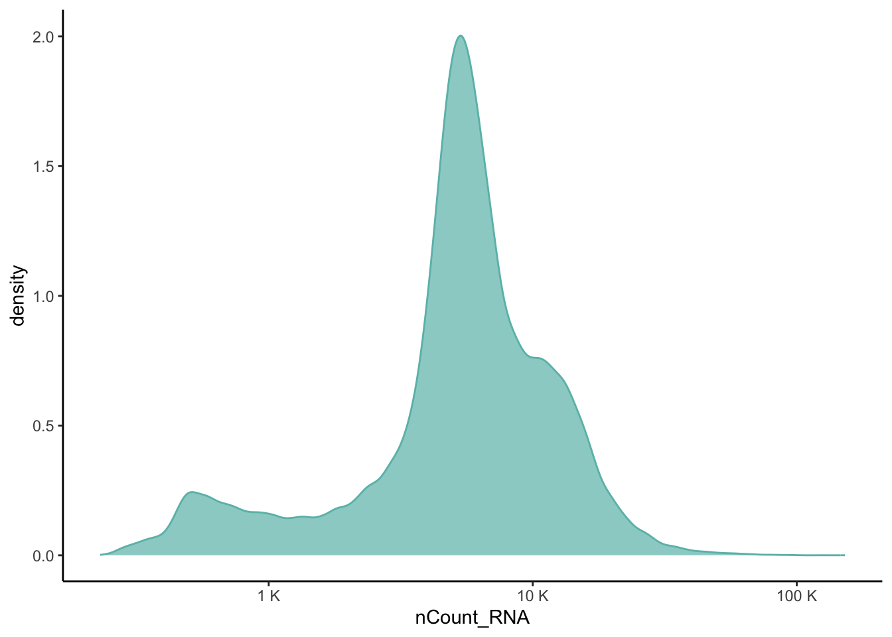
2 - Number of genes
nFeature_RNA is the number of genes detected in a cell. This is a measure of the total number of genes detected in a cell. Simiarly, we want to look out for cells with significantly low or high feature count. Feature counts give us an idea of library complexity while UMI counts looks at library size. Note that the figure below plots genes (features) on a log10 scale.
ggplot(se@meta.data, aes(x = nFeature_RNA)) +
geom_density(color = "#6abcb6", fill = "#6abcb6", alpha = 0.7) +
scale_x_continuous(
transform = "log10",
labels = scales::unit_format(unit = "K", scale = 1e-3)) +
theme_classic()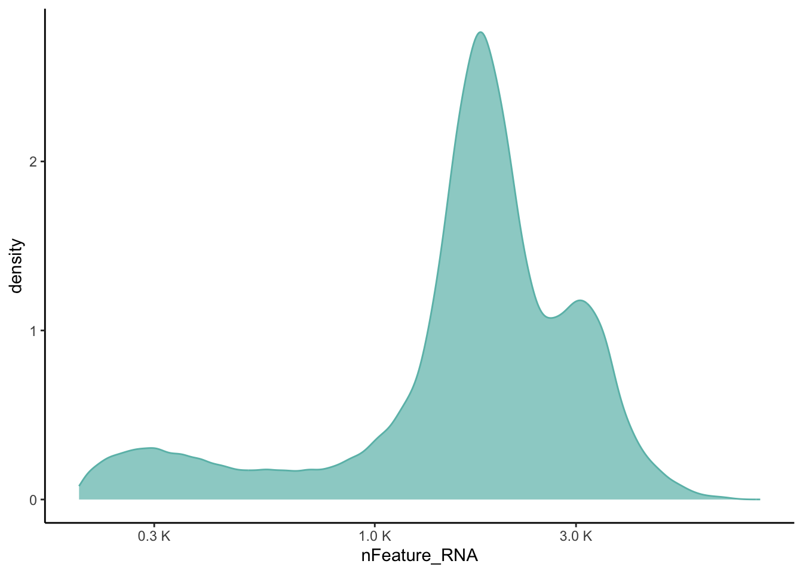
A distribution showing incredibly high number of genes per cell is indicative of doublets or large cells. Cells on the left side of the distribution with low gene counts could be low quality cells or just RBCs or platelets. TKTK
3 - Percentage of mitochondrial genes
Notice the object already has Percent of mitochondrial genes calculated. We are going to calculate them again to show how to do it.
Seurat’s PercentageFeatureSet function calculates the percentage of a feature set in each cell. This function is useful for calculating the percentage of mitochondrial genes, ribosomal genes, or any other gene set of interest using regular expression to filter these out by gene name.
# Calculate the percentage of mitochondrial genes
se <- PercentageFeatureSet(se, pattern = "^MT-", col.name = "perc.mt")
# Calculate the percentage of ribosomal genes
se <- PercentageFeatureSet(se, pattern = "^RPS|^RPL", col.name = "perc.ribo")
# Calculate the percentage of hemoglobin genes
se <- PercentageFeatureSet(se, pattern = "^HB[^(P)]", col.name = "perc.hb")# Plot Percent of mitochondrial genes by Sample
VlnPlot(se,
group.by = "Sample ID",
features = "perc.mt",
# log = TRUE,
pt.size = 0,
) + NoLegend()Warning: Default search for "data" layer in "RNA" assay yielded no results;
utilizing "counts" layer instead.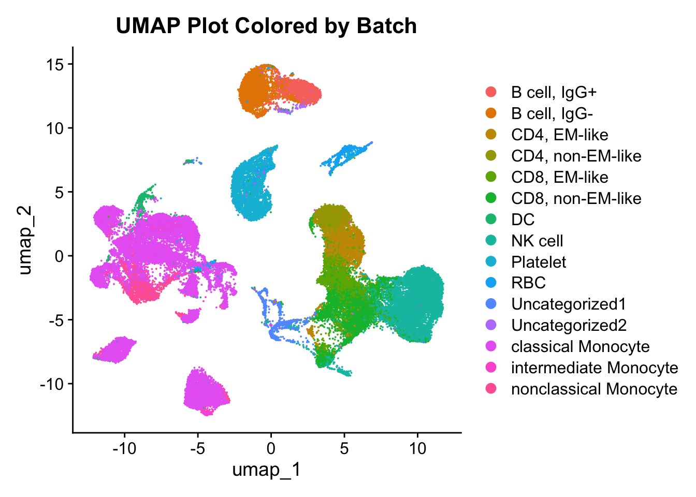
TKTK Heavy tail on the low end.
# Plot Percent of ribosomal genes by Sample
VlnPlot(se,
group.by = "Sample ID",
features = "perc.ribo",
# log = TRUE,
pt.size = 0
) + NoLegend()Warning: Default search for "data" layer in "RNA" assay yielded no results;
utilizing "counts" layer instead.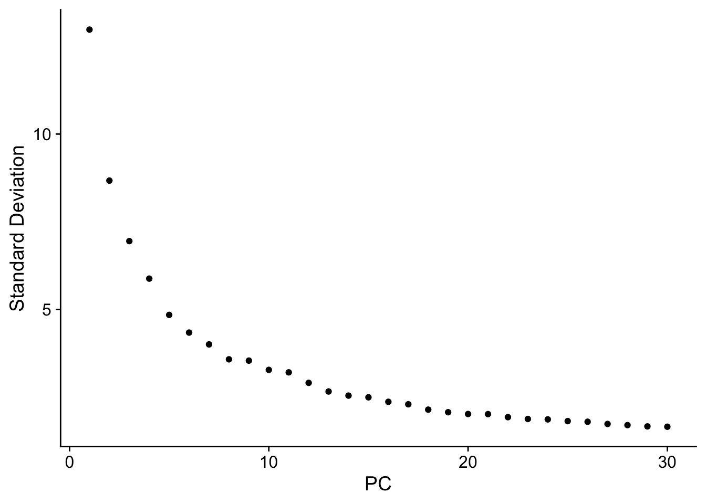
# Plot Percent of hemoglobin genes by Sample
VlnPlot(se,
group.by = "Sample ID",
features = "perc.hb",
# log = TRUE,
pt.size = 0
) + NoLegend()Warning: Default search for "data" layer in "RNA" assay yielded no results;
utilizing "counts" layer instead.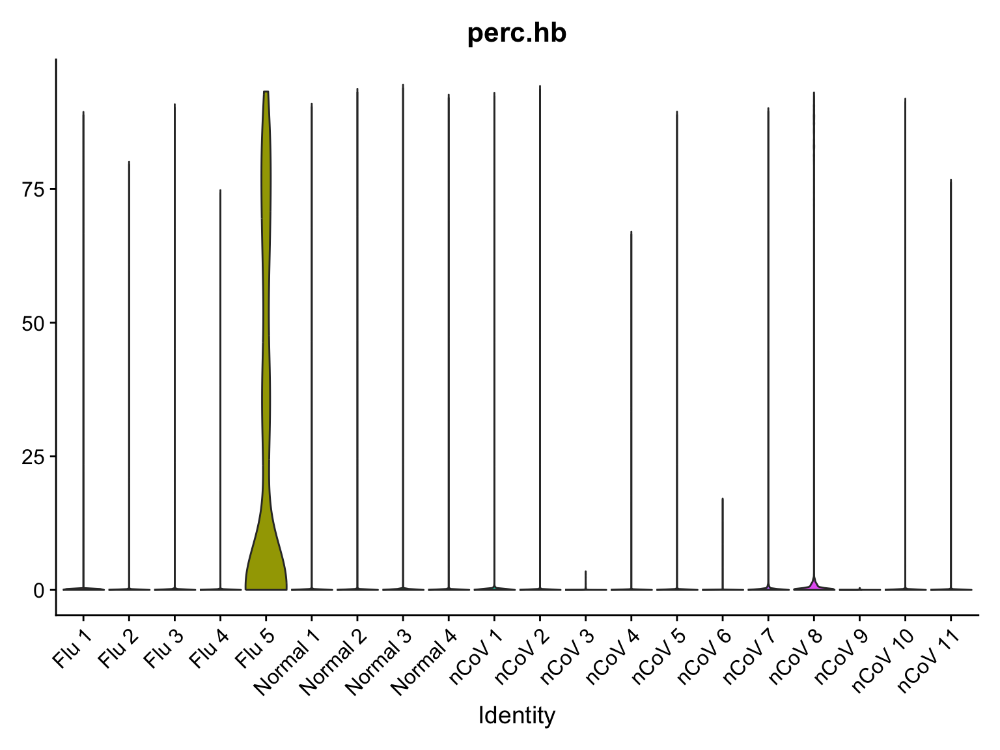
# Plot features by Sample together
VlnPlot(se,
group.by = "Sample ID",
features = c("perc.mt", "perc.ribo", "perc.hb"),
# log = TRUE,
pt.size = 0
) + NoLegend()Warning: Default search for "data" layer in "RNA" assay yielded no results;
utilizing "counts" layer instead.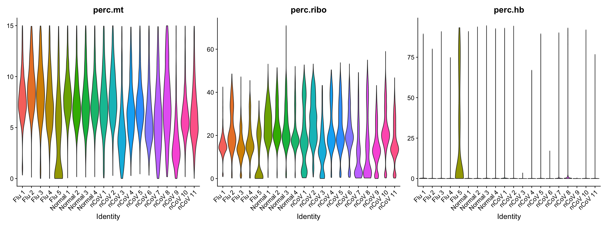
With these distributions, something notable is going on in Flu 5. Let’s perform other quality control visualizations to see if we can find out what is happening.
TKTK Need to look at how these features look together, not just on their own. ### Feature Covariation
Another way to visualize these distributions is:
library size v library complexity
# Percent Mitochondrial Genes
se@meta.data %>%
ggplot2::ggplot(., ggplot2::aes(x = nCount_RNA, y = nFeature_RNA, color = perc.mt)) +
ggplot2::geom_point() +
ggplot2::theme_classic() +
ggplot2::scale_color_gradient(low = "yellow", high = "red", limits = c(0, 20))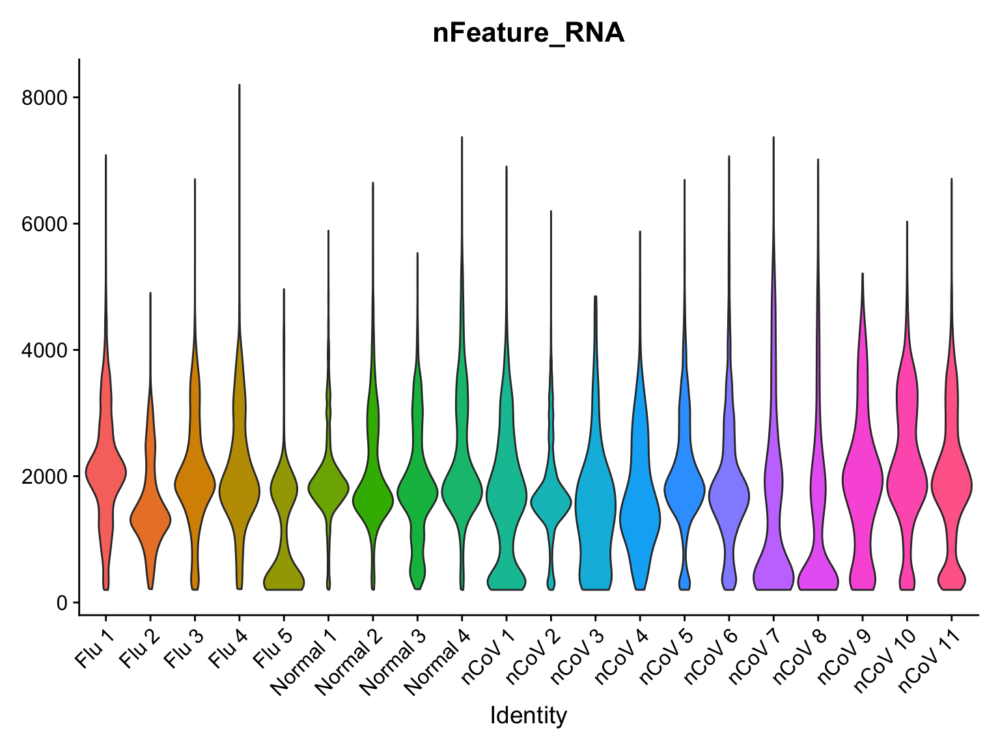
# Percent MT Genes per sample
se@meta.data %>%
ggplot(., ggplot2::aes(x = nCount_RNA, y = nFeature_RNA, color = perc.mt)) +
geom_point() +
facet_wrap(~`Sample ID`) +
theme_classic() +
scale_color_gradient(low = "yellow", high = "red", limits = c(0, 20)) +
scale_x_continuous(
labels = scales::unit_format(unit = "K", scale = 1e-3))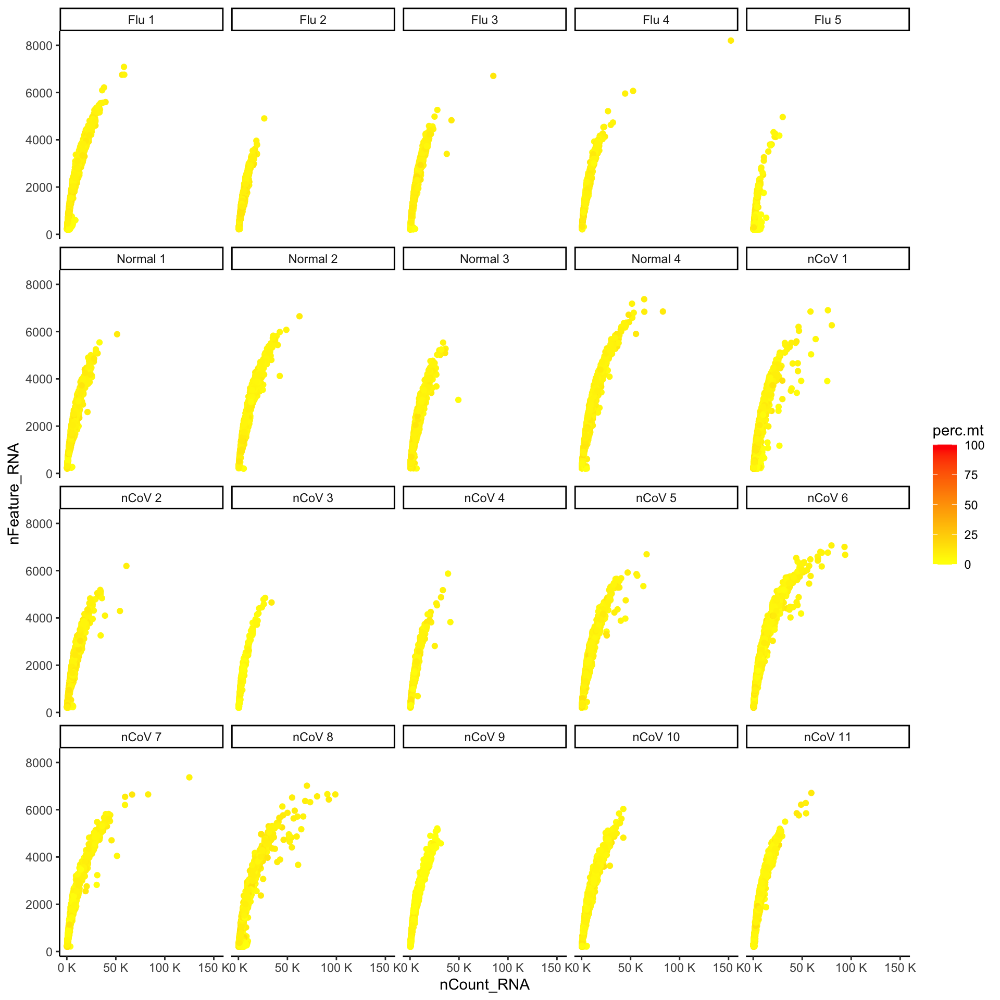
The authors mention they filter out UMIs with higher than 15% mitochondrial genes. This explains the cap we see at that range above.
# Percent Ribosomal Genes
se@meta.data %>%
ggplot(., ggplot2::aes(x = nCount_RNA, y = nFeature_RNA, color = perc.ribo)) +
geom_point() +
theme_classic() +
scale_color_gradient(low = "yellow", high = "red", limits = c(0, 50))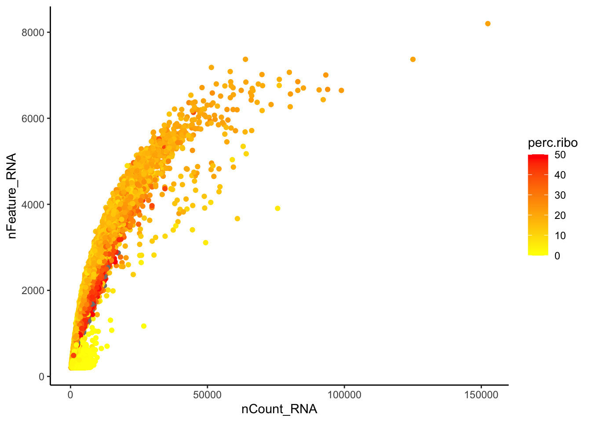
# Percent MT Genes per sample
se@meta.data %>%
ggplot(., ggplot2::aes(x = nCount_RNA, y = nFeature_RNA, color = perc.ribo)) +
geom_point() +
facet_wrap(~`Sample ID`) +
theme_classic() +
scale_color_gradient(low = "yellow", high = "red", limits = c(0, 50)) +
scale_x_continuous(
labels = scales::unit_format(unit = "K", scale = 1e-3))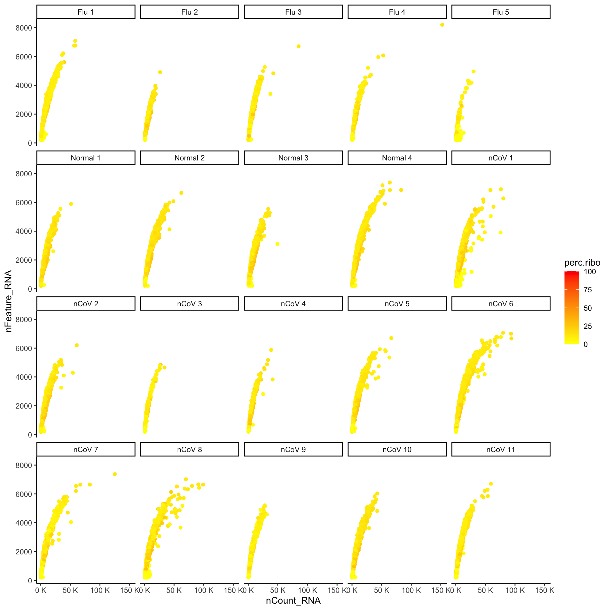
# Percent Hemoglobin Genes
se@meta.data %>%
ggplot(., ggplot2::aes(x = nCount_RNA, y = nFeature_RNA, color = perc.hb)) +
geom_point() +
theme_classic() +
scale_color_gradient(low = "yellow", high = "red", limits = c(0, 100))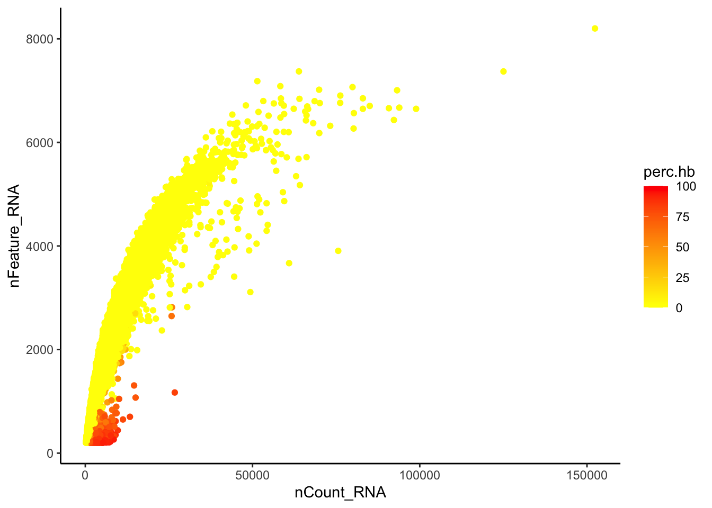
# Percent hemoglobin Genes per sample
se@meta.data %>%
ggplot(., ggplot2::aes(x = nCount_RNA, y = nFeature_RNA, color = perc.hb)) +
geom_point() +
facet_wrap(~`Sample ID`) +
theme_classic() +
scale_color_gradient(low = "yellow", high = "red", limits = c(0, 100)) +
scale_x_continuous(
labels = scales::unit_format(unit = "K", scale = 1e-3))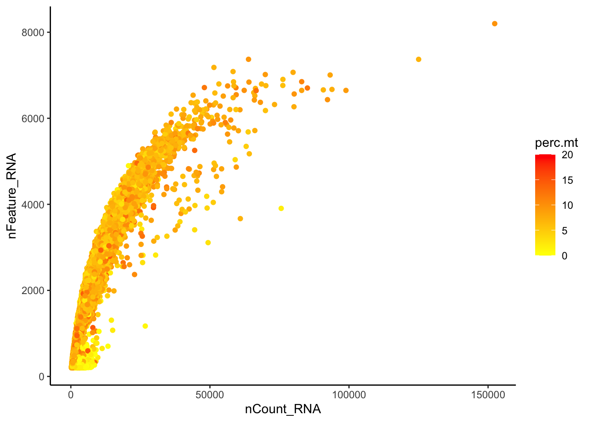
# Plot by cell type
se@meta.data %>%
ggplot(., ggplot2::aes(x = nCount_RNA, y = nFeature_RNA, color = Celltype)) +
geom_point() +
theme_classic() 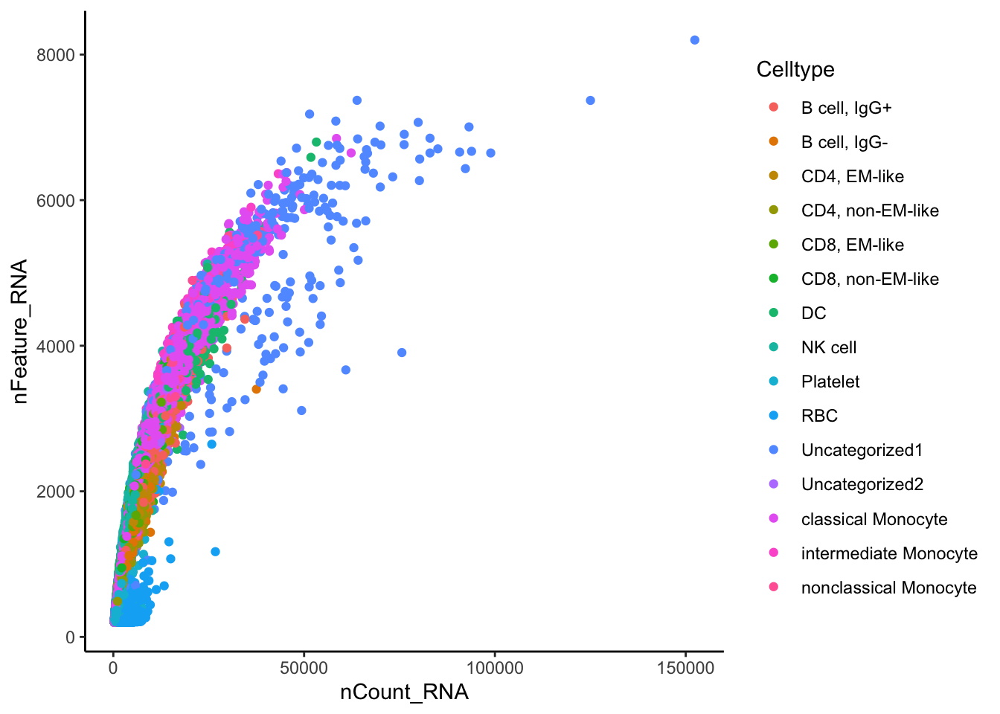
# Percent MT Genes per sample
se@meta.data %>%
ggplot(., ggplot2::aes(x = nCount_RNA, y = nFeature_RNA, color = Celltype)) +
geom_point() +
facet_wrap(~Celltype) +
theme_classic()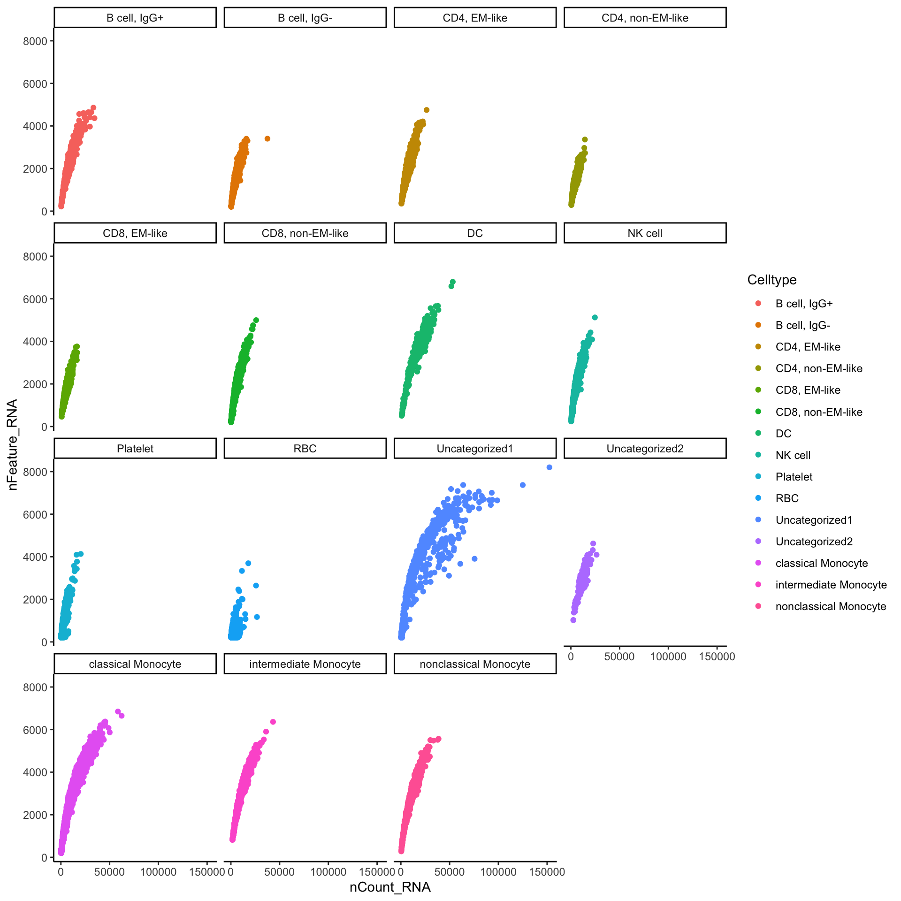
After looking at the cell type distribution, the hemoglobin concentration makes sense as it corresponds to erythocytes which are high in hemoglobin.
Add Batch Information
Preprocessed Seurat object’s will often contain information about what batch the samples were processed in as well as how doublets were calculated. From the paper for this dataset, the batch information is found in a supplementary table and the authors claimed most doublets were classified as “Uncategorized”. Because they did not include the doublet information in the metadata, we will add it in this section.
To define doublets, packages in both R and Python run per batch. We imported the batch information so we could subset the larger object and filter out doublets per batch.
# Make a data frame and extract barcode and Sample ID metadata from se obj
info <- data.frame(Barcode = colnames(se), "Sample ID" = se@meta.data$'Sample ID')
colnames(info) <- gsub("\\.", " ", colnames(info))
# Load in batch information
batch_info <- read.csv("../data/batch_info.csv")
# Rename batch_info column names to have a space instead of "."
colnames(batch_info) <- gsub("\\.", " ", colnames(batch_info))
batch_info <- batch_info %>%
select("Sample ID", "Experimental batch")
head(batch_info) Sample ID Experimental batch
1 Flu 1 1
2 Flu 2 1
3 Flu 3 2
4 Flu 4 2
5 Flu 5 2
6 nCoV 1 1# merge the batch_info with the info dataframe
info <- merge(info, batch_info, by = "Sample ID")
rownames(info) <- info$Barcode
info <- info %>% select(-Barcode)
# Add batch numbers to the metadata
se <- AddMetaData(se, info)DoubletFinder
Doublet detection and removal is sensitive because you don’t want to remove any valuable outliers but still take into consideration the noisiness of the data. There are many different packages that can be used to detect doublets. If you are familiar with Python, we use Scrublet most often. But for the sake of staying in one programming language, DoubletFinder was found to be one of the most accurate R packages. DoubletFinder uses a nearest neighbor approach to identify doublets. The package has a function called doubletFinder that takes in a Seurat object and returns a Seurat object with doublet information in the metadata.
library(DoubletFinder)
# Find doublets
exp_btch <- unique(se@meta.data$'Experimental batch')How it Works
TKTK DoubletFinder looks at the expression profiles of the cells in the batch and generates two parameters pK and pANN to identify doublets by inserting artificial doublets into the data to determine which cells are real doublets. DoubletFinder combines random cell’s gene expression profiles to create these “fake doublets.” Then a k-nearest neighbors graph is calculated where the best pK is surveyed and calculated for each batch.
Here, you have a k-nearest neighbor graph where each cell has k neighbors. pANN is the proportion of each cell’s neighbors that are artificial. A high pANN value says that a larger proportion of the cell around a specific cell are fake doublets suggesting that the cell itself is a doublet. The higher the pK, the higher the pANN needs to be to make a difference.
Cells in transitioning states or cells with mixed phenotpyes can be mistaken for doublets. It is important not to disgard cells jsut because they have a large doublet score (pANN value) becuase there might be very interesting biolgical information in these cells.
DoubletFinder allows you to set a threshold and will give each cell a categorical result of ‘Singlet’ or ‘Doublet’ but we suggest looking at the raw pANN values to understand the distribution of these cells and make threshold adjustments accordingly.
Parameters
pK parameter = the expected proportion of doublets in our dataset. This metric determines the accuracy of the model. The higher the pK, the more stringent the model is in classifying doublets. The lower the pK, the more lenient the model is in classifying doublets. It is the PC neighborhood size used to compute pANN, expressed as a proportion of the merged real-artificial data.
pN parameter = default number of doublets we expect to find (set to 0.25 by default). pN functions as the threshold.
pANN = proportion of artificial nearest neighbors or the “doublet score”.
DoubletFinder is only sensitive to heterotypic doublets (transcriptionally-distinct doublets) so the developer suggests using a cell-type annotations (here: batch_seurat_object@meta.data$seurat_clusters) to model the expected proportion of homotypic (transcriptionally-similar) doublets.
# Run doubletFinder
process_batch <- function(batch) {
# 1 - Subset Seurat object by batch
batch_seurat_object <- subset(se, cells = which(se@meta.data$'Experimental batch' == batch))
# 2 - Process count data of that subseted Seurat object
batch_seurat_object <- batch_seurat_object %>%
NormalizeData() %>%
FindVariableFeatures() %>%
ScaleData() %>%
RunPCA() %>%
FindNeighbors() %>%
FindClusters()
# 3 - Run pK identification with NO ground truth
## paramSweep: systematically explore a range of parameter values to determine the most appropriate settings for doublet detection
## summarizeSweep: summarizes results of paramSweep() function
sweep.res.list_sample <- paramSweep(batch_seurat_object, PCs = 1:20, sct = FALSE)
sweep.stats_sample <- summarizeSweep(sweep.res.list_sample, GT = FALSE)
bcmvn_sample <- find.pK(sweep.stats_sample)
# Line plot to show the pK values for BCmetric. The highest BCmetric is where the most optimal pK value is.
# ggplot(bcmvn_sample, aes(pK, BCmetric, group = 1))+
# geom_point() +
# geom_line()
# 4 - Calculate pK where pK is the proportion of cells that are doublets.
pK <- bcmvn_sample %>%
filter(BCmetric == max(BCmetric)) %>%
select(pK)
pK <- as.numeric(as.character(pK[[1]]))
# 5 - nExp defines the expected pANN threshold used to make final doublet-decisions
annotations <- batch_seurat_object@meta.data$seurat_clusters
# annotations <- Idents(batch_seurat_object)
homotypic.prop <- modelHomotypic(annotations)
nExp_poi <- round(0.075*nrow(se@meta.data)) # Assuming 7.5% doublet formation rate
nExp_poi.adj <- round(nExp_poi*(1-homotypic.prop))
# 6 - Run doubletFinder
batch_seurat_object <- doubletFinder(
batch_seurat_object,
PCs = 1:20,
pN = 0.25,
pK = pK,
nExp = nExp_poi.adj,
reuse.pANN = FALSE, # If TRUE, pANN will be reused from a previous run
sct = FALSE) # If TRUE, sctransform will be used for preprocessing
# 7 - Format doublet information for return dataframe
pANN <- colnames(batch_seurat_object@meta.data) %>%
keep(grepl('^pANN*', colnames(batch_seurat_object@meta.data))) # pANN_0.25_0.3_1000
DF_class <- colnames(batch_seurat_object@meta.data) %>%
keep(grepl('^DF.classifications*', colnames(batch_seurat_object@meta.data))) # DF.classifications_0.25_0.3_1000
## Extract values from pANN variable name
params <- gsub("^pANN_", "", pANN) # Remove "pANN_"
params <- strsplit(params, "_")[[1]] # Split by "_"
pN <- params[1] # Extract "0.1"
pK <- params[2] # Extract "0.1"
doublet_run <- params[3] # Extract "1000"
## Create new columns "pN", "pK", and "doublet_run"
colnames(batch_seurat_object@meta.data)[colnames(batch_seurat_object@meta.data) == pANN] <- "pANN"
colnames(batch_seurat_object@meta.data)[colnames(batch_seurat_object@meta.data) == DF_class] <- "DF_class"
batch_seurat_object@meta.data$pN <- pN
batch_seurat_object@meta.data$pK <- pK
batch_seurat_object@meta.data$doublet_run <- doublet_run
# 8 - Return DF of doublet information here
df <- data.frame(
Barcode = colnames(batch_seurat_object),
batch = batch_seurat_object@meta.data$'Experimental batch',
pANN = batch_seurat_object@meta.data$'pANN',
DF_class = batch_seurat_object@meta.data$'DF_class',
doublet_run = batch_seurat_object@meta.data$doublet_run,
pK = batch_seurat_object@meta.data$pK,
pN = batch_seurat_object@meta.data$pN
)
rownames(df) <- df$Barcode
return(df)
}
processed_doublets <- lapply(exp_btch, process_batch)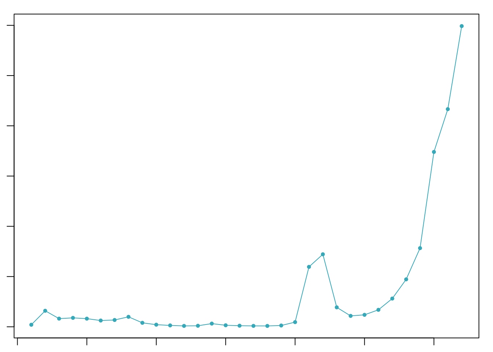
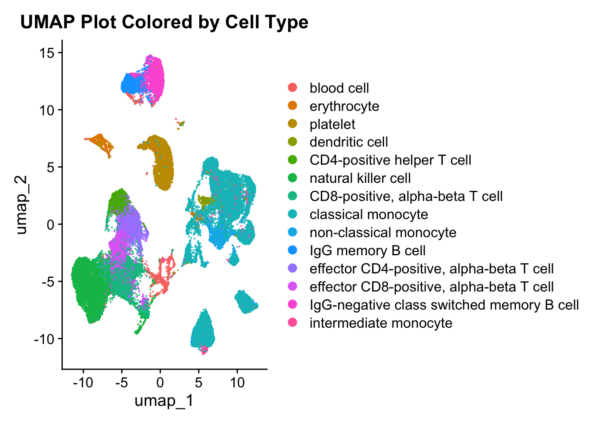

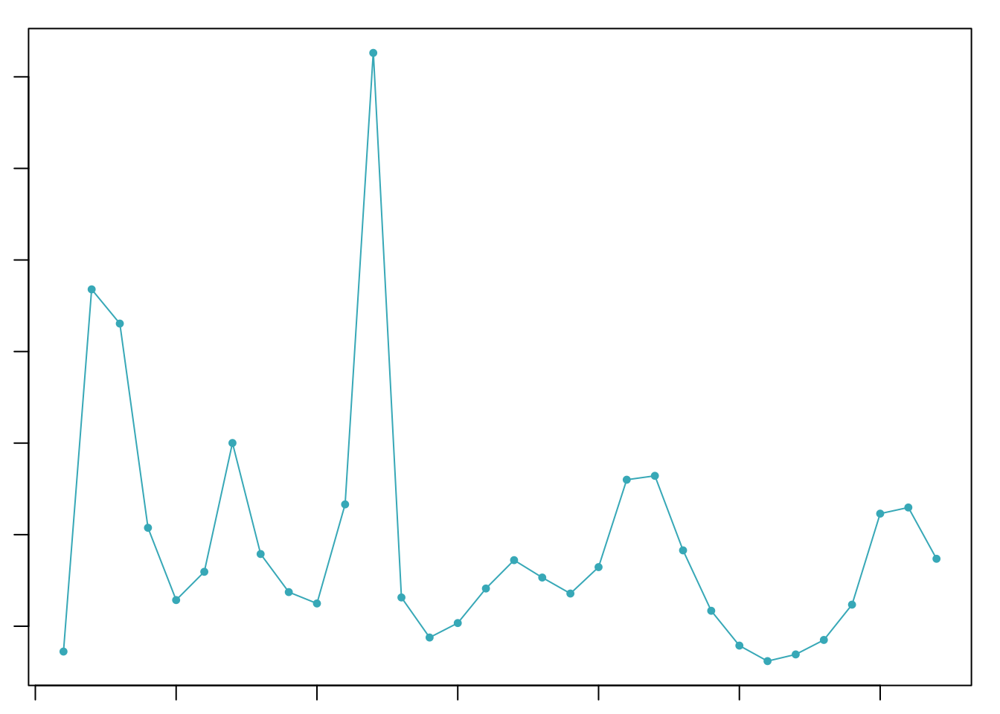
TKTK Save doublet foubnd step so we don’t run it in the workshop.
# Add doublet information to the main seurat object
test <- bind_rows(processed_doublets)
# plot pANN against batch
head(test) Barcode batch pANN DF_class doublet_run
AAACCCAAGAATGTTG-12 AAACCCAAGAATGTTG-12 3 0.2189041 Singlet 4142
AAACCCAAGGCCTGCT-12 AAACCCAAGGCCTGCT-12 3 0.2095721 Singlet 4142
AAACCCACACCTAAAC-12 AAACCCACACCTAAAC-12 3 0.3219571 Singlet 4142
AAACCCACACTTGGCG-12 AAACCCACACTTGGCG-12 3 0.3366218 Doublet 4142
AAACCCAGTCTACACA-12 AAACCCAGTCTACACA-12 3 0.2571657 Singlet 4142
AAACCCAGTCTACAGT-14 AAACCCAGTCTACAGT-14 3 0.2315691 Singlet 4142
pK pN
AAACCCAAGAATGTTG-12 0.3 0.25
AAACCCAAGGCCTGCT-12 0.3 0.25
AAACCCACACCTAAAC-12 0.3 0.25
AAACCCACACTTGGCG-12 0.3 0.25
AAACCCAGTCTACACA-12 0.3 0.25
AAACCCAGTCTACAGT-14 0.3 0.25ggplot(test, aes(x = pANN, fill = as.character(batch))) +
geom_density(bins = 100, alpha = 0.5) +
theme_classic()Warning in geom_density(bins = 100, alpha = 0.5): Ignoring unknown parameters:
`bins`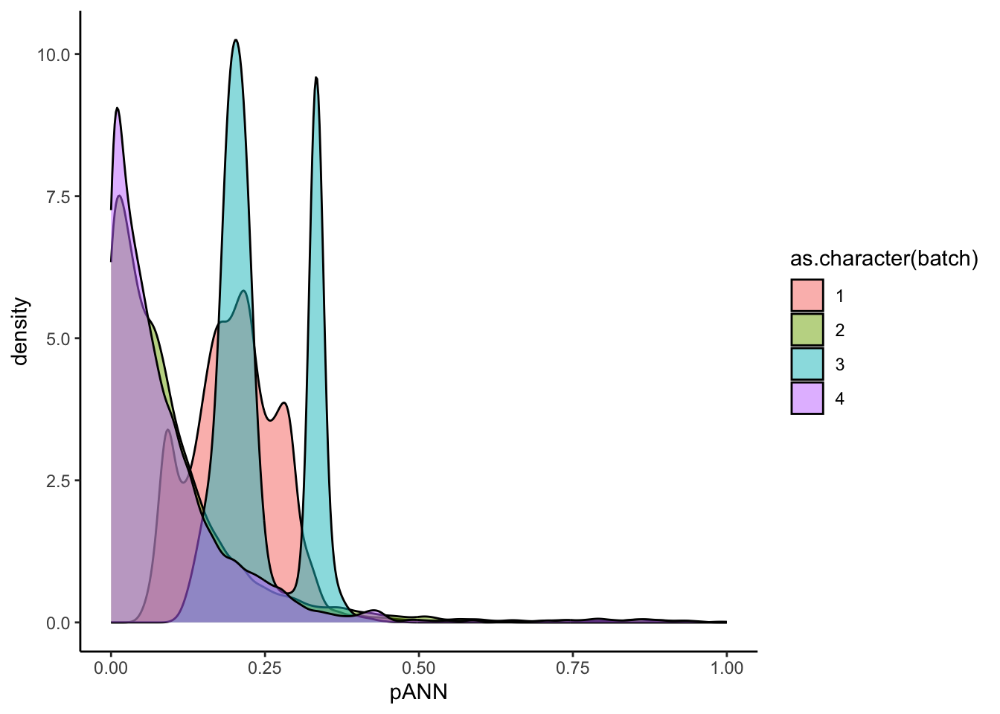
table(test$batch)
1 2 3 4
15689 8624 18752 16507 rownames(test) <- test$Barcode
test <- test %>% select(-Barcode)
se <- AddMetaData(
object = se,
metadata = test
)# Save Doublet information in Seurat object
saveRDS(se, '../data/workshop-data-withDFinfo.rds')Load Pre-Run DF object
se <- readRDS('../data/workshop-data-withDFinfo.rds')Perform Preprocessing
se <- se %>%
NormalizeData(verbose = FALSE) %>%
FindVariableFeatures(
method = "vst",
nfeatures = 3000,
verbose = FALSE) %>%
ScaleData(verbose = FALSE, features = VariableFeatures(.)) %>%
RunPCA(verbose = FALSE) %>%
RunUMAP(dims = 1:30, verbose = FALSE)Warning: The default method for RunUMAP has changed from calling Python UMAP via reticulate to the R-native UWOT using the cosine metric
To use Python UMAP via reticulate, set umap.method to 'umap-learn' and metric to 'correlation'
This message will be shown once per sessionRun DoubletFinder based on batch where batch is the 10X run because we’re concerned about the technical error that occurs only in the 10X library preparation.
# Plot UMAP colored by batch
DimPlot(se, reduction = "umap", group.by = 'DF_class') +
labs(title = "UMAP Plot Colored by Doublet Class")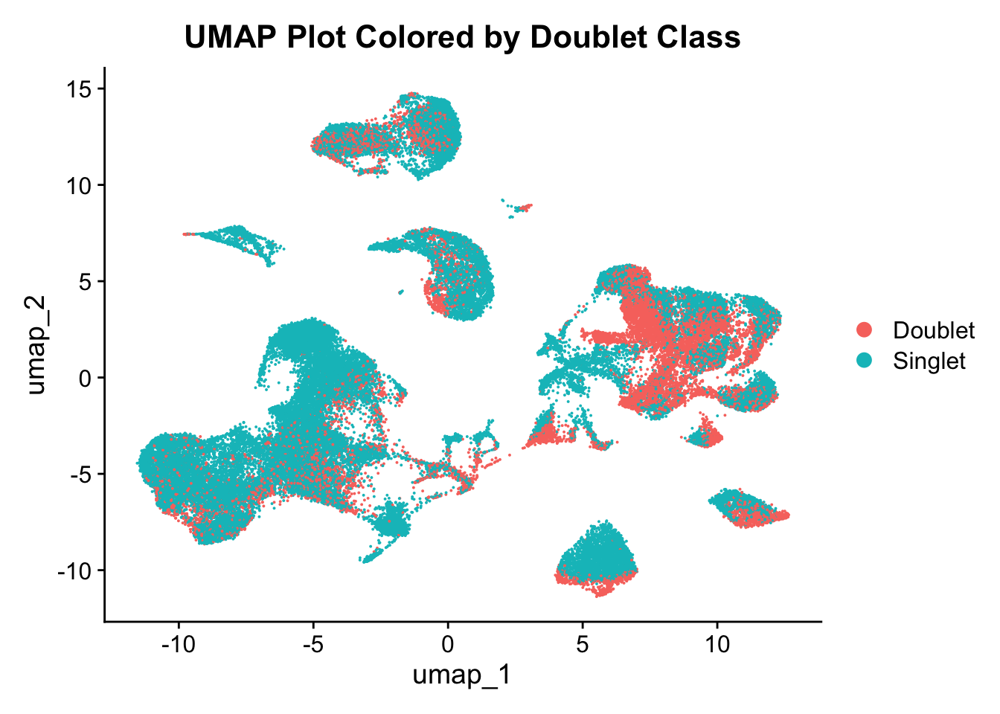
Let’s look at the distribution of pANN values
# Plot UMAP by pANN
p1 <- FeaturePlot(se, reduction = "umap", features = "pANN") +
labs(title = "UMAP Plot Colored by pANN")
# Plot UMAP by cell type
p2 <- DimPlot(se, reduction = "umap", group.by = "Celltype") +
labs(title = "UMAP Plot Colored by Cell Type")
p1 | p2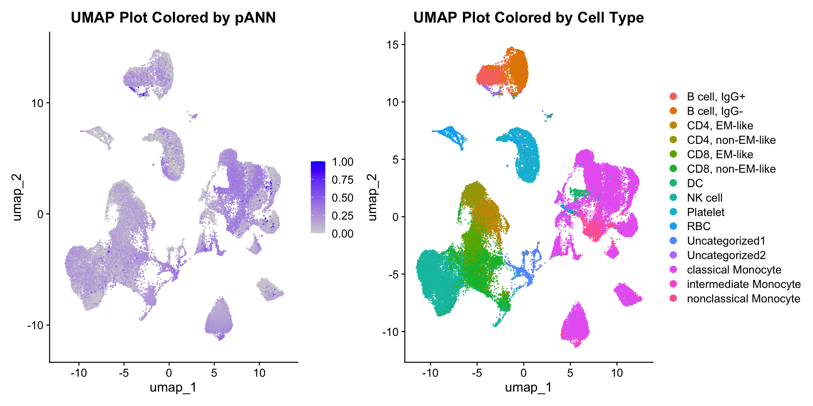
# DimPlot(se, reduction = "umap", group.by = "Celltype") +
# labs(title = "UMAP Plot Colored by Batch")Let’s see if celltypes annotated by the authors are show the pANN distribution.
ggplot(se@meta.data, aes(x = pANN, fill = Celltype)) +
geom_density(bins = 100, alpha = 0.5) +
# facet by cell type
facet_wrap(~Celltype) +
theme_classic()Warning in geom_density(bins = 100, alpha = 0.5): Ignoring unknown parameters:
`bins`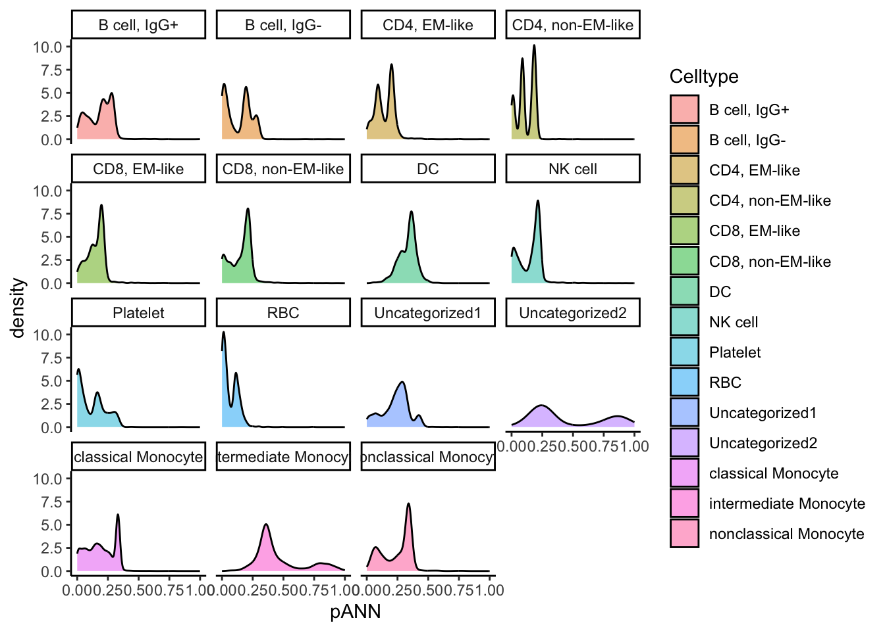
While both Uncategorized Celltpyes are said (by the authors) to be doublets, the distribution of pANN values of Uncategorized1 does not necessarily reflect high pANN values but the distribution of Uncategorized2 does.
Filter out cells
Filter out our data by 4 criteria.
Any cell with less that 500 UMIs
Any cell with less than 200 genes
Any cell with more than 15% mitochondrial genes
good <- subset(
se,
subset = nFeature_RNA > 200 & nCount_RNA > 500 & perc.mt < 15)
# label cells in se if they're in good as "good" and those not in good as "bad"
se@meta.data <- se@meta.data %>%
mutate(quality = ifelse(colnames(se) %in% colnames(good), "good quality", "bad quality"))
rm(good)s1 <- ggplot(se@meta.data, aes(x = pANN)) +
geom_density(color = "#6abcb6", fill = "#6abcb6", alpha = 0.7) +
theme_classic()
s1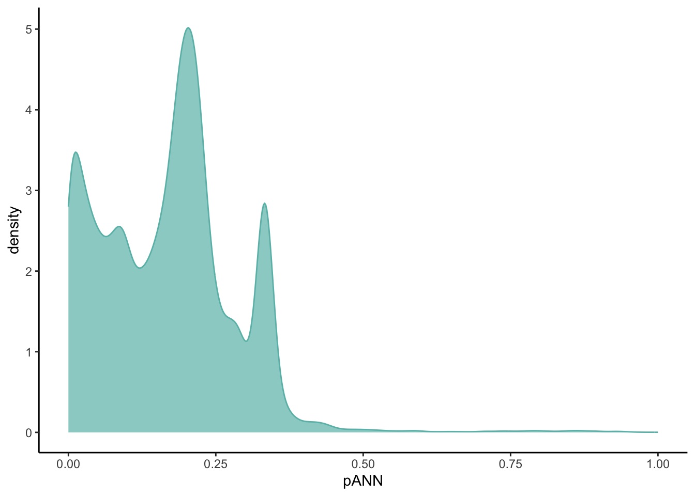
s2 <- FeaturePlot(se, reduction = "umap", features = "pANN") +
labs(title = "UMAP Plot Colored by pANN") +
scale_fill_gradient(limits = c(0, 1))
# Plot UMAP of good quality cells
s3 <- DimPlot(se, reduction = "umap", group.by = "quality") +
labs(title = "UMAP Plot Colored by Cell Quality")
s2 | s3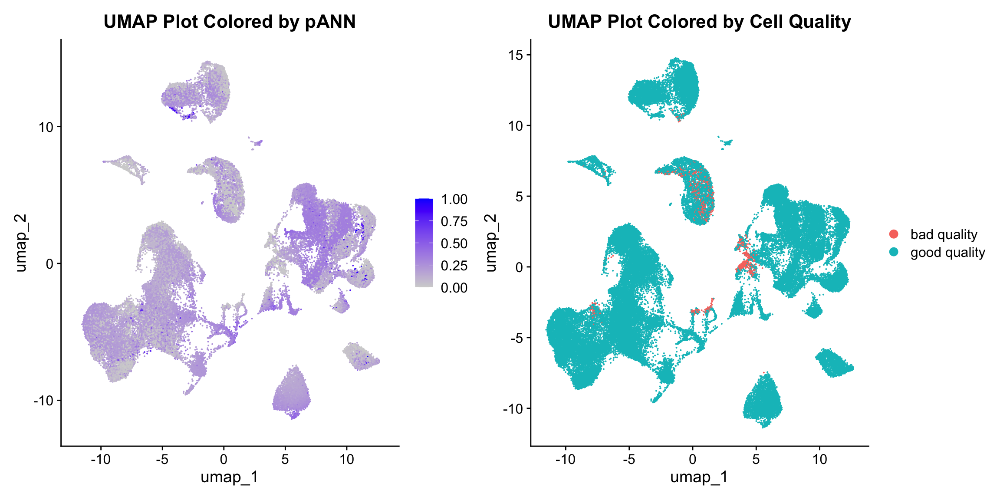
We will keep the potential doublets in the data because they may be biologically relevant.
Resave Seurat object
saveRDS(se, '../data/workshop-data-withQuality.rds')Session Info
sessionInfo()R version 4.3.2 (2023-10-31)
Platform: aarch64-apple-darwin20 (64-bit)
Running under: macOS Sonoma 14.5
Matrix products: default
BLAS: /Library/Frameworks/R.framework/Versions/4.3-arm64/Resources/lib/libRblas.0.dylib
LAPACK: /Library/Frameworks/R.framework/Versions/4.3-arm64/Resources/lib/libRlapack.dylib; LAPACK version 3.11.0
locale:
[1] en_US.UTF-8/en_US.UTF-8/en_US.UTF-8/C/en_US.UTF-8/en_US.UTF-8
time zone: America/New_York
tzcode source: internal
attached base packages:
[1] parallel stats graphics grDevices utils datasets methods
[8] base
other attached packages:
[1] ROCR_1.0-11 KernSmooth_2.23-22 fields_15.2
[4] viridisLite_0.4.2 spam_2.10-0 DoubletFinder_2.0.4
[7] colorBlindness_0.1.9 RColorBrewer_1.1-3 lubridate_1.9.3
[10] forcats_1.0.0 stringr_1.5.1 dplyr_1.1.4
[13] purrr_1.0.2 readr_2.1.5 tidyr_1.3.1
[16] tibble_3.2.1 ggplot2_3.5.1 tidyverse_2.0.0
[19] Seurat_5.0.3 SeuratObject_5.0.2 sp_2.1-4
loaded via a namespace (and not attached):
[1] rstudioapi_0.16.0 jsonlite_1.8.8 magrittr_2.0.3
[4] spatstat.utils_3.0-4 farver_2.1.2 rmarkdown_2.27
[7] vctrs_0.6.5 spatstat.explore_3.2-7 htmltools_0.5.8.1
[10] gridGraphics_0.5-1 sctransform_0.4.1 parallelly_1.37.1
[13] htmlwidgets_1.6.4 ica_1.0-3 plyr_1.8.9
[16] plotly_4.10.4 zoo_1.8-12 igraph_2.0.3
[19] mime_0.12 lifecycle_1.0.4 pkgconfig_2.0.3
[22] Matrix_1.6-5 R6_2.5.1 fastmap_1.2.0
[25] fitdistrplus_1.1-11 future_1.33.2 shiny_1.8.1.1
[28] digest_0.6.35 colorspace_2.1-0 patchwork_1.2.0
[31] tensor_1.5 RSpectra_0.16-1 irlba_2.3.5.1
[34] labeling_0.4.3 progressr_0.14.0 fansi_1.0.6
[37] spatstat.sparse_3.0-3 timechange_0.3.0 httr_1.4.7
[40] polyclip_1.10-6 abind_1.4-5 compiler_4.3.2
[43] bit64_4.0.5 withr_3.0.0 fastDummies_1.7.3
[46] maps_3.4.2 MASS_7.3-60.0.1 tools_4.3.2
[49] lmtest_0.9-40 httpuv_1.6.15 future.apply_1.11.2
[52] goftest_1.2-3 glue_1.7.0 nlme_3.1-164
[55] promises_1.3.0 grid_4.3.2 Rtsne_0.17
[58] cluster_2.1.6 reshape2_1.4.4 generics_0.1.3
[61] gtable_0.3.5 spatstat.data_3.0-4 tzdb_0.4.0
[64] data.table_1.15.4 hms_1.1.3 utf8_1.2.4
[67] spatstat.geom_3.2-9 RcppAnnoy_0.0.22 ggrepel_0.9.5
[70] RANN_2.6.1 pillar_1.9.0 RcppHNSW_0.6.0
[73] vroom_1.6.5 later_1.3.2 splines_4.3.2
[76] lattice_0.22-6 survival_3.6-4 bit_4.0.5
[79] deldir_2.0-4 tidyselect_1.2.1 miniUI_0.1.1.1
[82] pbapply_1.7-2 knitr_1.45 gridExtra_2.3
[85] scattermore_1.2 xfun_0.44 matrixStats_1.3.0
[88] stringi_1.8.4 lazyeval_0.2.2 yaml_2.3.8
[91] evaluate_0.23 codetools_0.2-20 cli_3.6.2
[94] uwot_0.1.16 xtable_1.8-4 reticulate_1.36.1
[97] munsell_0.5.1 Rcpp_1.0.12 globals_0.16.3
[100] spatstat.random_3.2-3 png_0.1-8 dotCall64_1.1-1
[103] listenv_0.9.1 scales_1.3.0 ggridges_0.5.6
[106] crayon_1.5.2 leiden_0.4.3.1 rlang_1.1.3
[109] cowplot_1.1.3